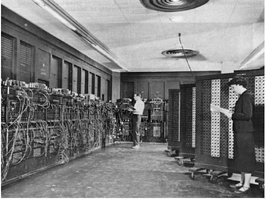

Petit historique de l'informatique
Informatique : une définition
Informatique
En 1957, l'ingénieur allemand Karl Steinbuch crée le terme « Informatik » pour son essai intitulé Informatik: Automatische Informationsverarbeitung, pouvant être rendu en français par « Informatique : traitement automatique de l'information ».
En 1966, l'Académie française consacre l'usage officiel du mot pour désigner la « science du traitement de l'information ». La presse, l'industrie et le milieu universitaire l'adoptent dès cette époque.
D'après Wikipedia, article Informatique
L'informatique est donc, étymologiquement, bien antérieure aux ordinateurs. Il s'agit de savoir comment les informations sont stockées, sur quels supports, et comment elles sont traitées.
Pré-histoire de l'informatique
Les premières traces laissées délibérément et nous étant parvenues par les êtres humains sont les peintures rupestres. Elles gardent de nombreux mystères, mais sont réellement des chefs d'oeuvres de civilisations passeés. Les archéo-anthorpologues s'accordent actuellement sur le fait que des proto-écritures ont été utilisées, mais nous ne disposons actuellement pas de pierres de Rosette permettant de les décrypter. On touve ensuite les gravures sur rochers, puis rapidement les tablettes d'argiles,etc.

Ces supports sont particulièrement résistants, mais difficiles à stocker et ne peuvent contenir que peu d'informations.
Les systèmes de comptages sont encore très primitifs et peu optimisés, du calculi (petit cailloux en latin), aux systèmes de comptages cunéiformes sexagésimaux (en base \(60\)), dont nous avons hérité pour notre décompte des heures et des angles en degré. On trouve rapidement cependant le système des bouliers, découvert de manières indépendantes par de multiples civilisation tout autour du globe.

Les supports de type papyrus, vélins (peau) et papiers sont probablement très anciens, mais ils se dégradent facilement, sont sensibles aux incendies, etc. Leurs difficultés de conservation sont cependant contrebalancées par la plus grande facilité à les travailler. Ils deviennent dès l'antiquité le support privilégié pour transmettre et conserver des informations, dans toutes les grandes civilisations.

La machine d'Anticythère, découverte en 1900 et datée de 87 avant J.C. est une machine servant à calculer les positions astronomiques, et donc à naviguer. Elle nous montre que le calcul a toujours un enjeu capital, et que l'humanité a fait preuve d'une très grande ingéniosité pour améliorer ses capacités de calculs.

Jusqu'à la fin de l'époque médiévale, la possibilité la plus répandue pour obtenir un manuscrit était de le recopier à la main - d'où la grande importance des moines-copistes et des monastère qui s'y consacraient dans la sphère d'influence occidentale. Cependant le procédé de xylographie (principe du tampon encreur avec une matrice en bois), ainsi que des procédés simplifiés de fabrication du papier transitent avec la grande horde mongole par l'intermédiaire de la route de la soie. Vers 1430, Johannes Gutenberg invente le principe de la presse à imprimer à caractères mobiles, et facilite grandement la copie d'oeuvres écrites. Une nouvelle ère de développement de la science et des idées se répend sur l'europe.

Les sciences se développent rapidement, les chiffres dits arabes remplacent les peu efficaces chiffres romains. Les techniques de calculs évoluent, mais restent effectuées au boulier où à la main. Au XVIIème siècle, Blaise Pascal, scientifique et penseur français, invente à 19 ans une machine à calculer pour aider son père à remettre de l'ordre dans les recttes fiscales d'une province française. Cette machine, la pascaline, était capable d'effecteur des opérations élémentaires par l'intermédiaire d'un ingénieux système d'engrenages. Cependant la précision nécessaire à la réalisation de ces engrenages en a rendu la conception extrèmenent couteuse, et peu de machines furent produites.

Gottfried Leibniz est un penseur allemand. Il fait progesser la philosophie, les mathématiques, la physique et l'ingénierie tout autant que son homologue français. Il améliore la pascaline, et l'utilise pour le calcul différentiel.
En 1725, Basile Bouchon, un Lyonnais, met au point le premier système de programmation d’un métier à tisser grâce à un ruban perforé. En 1728, Jean-Baptiste Falcon, son assistant, remplace le ruban par une série de cartes perforées reliées entre elles. Jacques de Vaucanson reprend cette idée en remplaçant ruban et cartes perforées par un cylindre métallique et enfin Joseph Marie Jacquard lie le tout dans son métier à tisser qui fut adopté dans le monde entier à partir de 1801.

Ces cartes perforées sont les premiers exemples de supports de stockages permettant de stocker d'autres informations que l'écrit ou l'image. En effet, ces cartes sont utilisées dans les orgues de barbarie pour représenter de la musique, et sur les métiers Jacquard afin d'y représenter des motifs de tissage.
Les métiers à tisser Jacquard sont la pointe de la technologie. Ils utilisent les cartes perforées pour réaliser des motifs complexes, et sont donc \« programmables » par l'introduction de nouvelles cartes.

Les machines à calculer

Au XIXème siècle, l'Empire Britannique est à son apogée et sa puissance repose sur sa force navale, aussi bien commerciale que militaire. Or à bord d'un navire la navigation se fait toujours aux étoile et par l'intermédiaire de cartes marines de plus en plus détaillées. Un navigateur à cette époque utilise quotidiennement des tables de navigations, qui ne sont rien d'autre que des tables de trigonométrie et de logarithmes. Et ces tables sont établiées et calculées à la main, et sont loin d'être exmptes d'erreurs de calcul. En 1833 - 1834, le mathématicien anglais Charles Babbage imagine une machine utilisant des cartes perforées qui permettrait d'effectuer des calculs scientifiques, la machine analytique (Differential engine). Cette machine ne sera jamais opérationnelle du vivant de Babbage.
Ada Lovelace (1815 - 1852), est une mathématicienne anglaise. Travaillant avec Charles Babbage, elle imagine pouvoir faire jouer de la musique, afficher des chiffres et des lettres avec la machine analytique. Elle décrit, plus d'un siècle avant son invention, l'ordinateur : « La machine analytique n'a nullement la prétention de créer quelque chose par elle-même. Elle peut exécuter tout ce que nous saurons lui ordonner d'exécuter. Elle peut suivre une analyse ; mais elle n'a pas la faculté d'imaginer des relations analytiques ou des vérités. Son rôle est de nous aider à effectuer ce que nous savons déjà dominer. »
Vers 1842 elle écrit des algorithmes pour réaliser un programme informatique et toutes les instructions à donner à la machine, jusqu'aux positions des rouages. Elle invente le concept de boucle, et devient ainsi la première programmeuse.
L'apparition de l'électricité comme source d'énergie va rapidement permettre le développement de moteurs qui améliorent les machines à calculer. A la fin du XIXème siècle, Herman Holerith conçoit une machine utilisant des cartes perforées qui permet de simplifier le recensement de la population arrivant à New-York. Il fonde une société qui prendra rapidement le nom d'IBM. Les machines à calculer électromagnétiques se développent rapidement, et en parallèle les mathématiques pr«ressent à grand pas.

Mathématicien et cryptologue britannique (1912-1954), Alan Turing a d'abord travaillé sur l'idée de calculabilité. Il montre que ce qui est calculable peut se décomposer en un nombre fini d'étapes, et peut de ce fait être réalisé par une machine. Il imagine à la fin des années 1930 un calculateur, mais celui-ci ne sera construit que 20 ans plus tard. Il imagine le moyen pour une machine de reproduire certaines action humaines : « Je crois que dans une cinquantaine d’années il sera possible de programmer des ordinateurs, avec une capacité de mémoire d’à peu près \(10^9\), pour les faire si bien jouer au jeu de l’imitation qu’un interrogateur moyen n’aura pas plus de 70 pour cent de chances de procéder à l’identification exacte après cinq minutes d’interrogation. »
Lors de la seconde guerre mondiale, Alan Turing coordonne l'équipe chargée du décodage de la machine Enigma utilisée par les Nazis. Il construit une machine, le Colossus Mark II, surnommée \« La bombe », qui permet le déchiffrement rapide des messages allemands. Cette machine peut être considére comme le premier ordinateur électronique, mais elle était difficilement repr«rammable car il fallait recabler pour changer de pr«ramme.

De l'électronique à la micro-informatique
L'électronique nait de l'invention des tubes à vides au début du XXème siècle. La machine Colossus, créée entre 1943 et 1945 (mais dont l'existence ne fur révélée qu'en 1970) utilise ces tubes à vides.

L'ENIAC est créé en 1944 d'une idée de John William Mauchly, aidé pour la résolution des problèmes d'ingénierie par J. Presper Eckert. Il sert à calculer des trajectoires balistiques, et est financé par l'armée américaine, pour un coût important, les tubes à vides ayant une facheuse tendance à voir leur durée de vie fortement limitée. L'ENIAC est surtout connu pour son côté colossal : 30 tonnes, \(167 ~m^2\) de surface au sol.

Il est cependant d'un grand secours pour les calculs balistiques dont les calculs sont fastidieux. Par exemple voici le temps de calcul pour une table de tir :
| Moyen | Temps |
|---|---|
| A la main | 2,6 j |
| Avec une machine à calculer | 12 h |
| Model 5 (concurrent de l'ENIAC) | 40 min |
| ENIAC | 3 s |
| PC moderne | <30 µs |
Entre \(1944\) et \(1955\), six femmes, Kathleen Antonelli, Jean Bartik, Betty Holberton, Marlyn Meltzer, Frances Spence et Ruth Teitelbaum sont les premières personnes à programmer l'ENIAC, pour un calcul balistique. Elles sont toutes mathématiciennes. Kathleen Antonelli et Frances Spence sont recrutées en 1942 par l’armée américaine pour calculer manuellement les trajectoires de tir. Marlyn Meltzer et Ruth Teitelbaum sont également calculatrices. Elles travaillent sur l'ENIAC à partir de 1944. Il s'agit d'identifier les différentes étapes du calcul et ensuite de câbler physiquement la machine. Ruth Teitelbaum, Frances Spence et Kathleen Antonelli poursuivirent leur travail sur l’Eniac lorsque celui-ci est transféré à Aberdeen en 1947.
Le transistor est inventé en \(1947\), et il remplace rapidement les tubes à vides à partir du milieu des années \(1950\), le coût de frabrication d'un transistor commençant à être plus faible que celui d'un tube à vide.

Dès \(1958\) apparraisent les premiers circuits intégrés, et en \(1971\) le premier microprocesseur commercial voit le jour : c'est l'Intel 4004. Les machines sont désormais miniaturisées, fiables, et leur coût de fabrication décroit fortement. L'informatique s'ouvre aux particuliers.

De multiples machines sont commercialisées : l’Altair 8008, l’Apple II (1977), l’IBM PC (1981), le ZX 81 (1981), le commodore 64 (1982), le Macintosh (1984) ... Le ZX 81 est considéré à son époque comme le premier ordinateur familial en kit en France, sa résolution et sa capacité mémoire (1 ko) ne permettait pas énormément de prouesses au niveau des jeux.
De nombreuses sociétés se lancent dans la production de machines familliales à partir du début des années \(1980\), et l'informatique rentre à l'école et commence à y être enseignée, en particulier sur les machines Thomson en France, comme le TO7, le MO5...
Les consoles de jeu
Si les consoles de jeu sont présentes deopuis le début des années 1970 - la console Odyssey est la première console a pouvoir être branchée sur l'écran de la télévision dès 1972, les jeux vidéos restent souvent cantonnés dans les salles d'arcades, où les bornes fleurissent à côtés des flippers et billards.
A la fin des années 1970 et au début des années 1980, le marché des consoles de jeu est florissant, avec pas moins de 744 modèles différents de consoles rien que pour l'année 1977, dont certaines telles l'Atari 260, la console Vectrex ou bien la console Videopac ont un certain succès en France.

Le crack du jeu vidéo de 1983 mènera à une forte réduction du nombre d'acteurs sur le marché des consoles, jusqu'à l'arrivée en 1986 de la console Nintendo NES qui bat tous les records de ventes.

Langages Informatiques
Histoire des lmangages
Les premiers ordinateurs exécutaient déjà du code binaire, et les premiers programmes étaient écrits sur des cartes perforées, à la main, directement en code binaire. Ils étaient donc particulièrement longs à produire, et le risuqe d'erreur était grand.
En \(1954\), IBM développe le premier langage assembleur. Il sert d'intermédiaire entre l'algorithme (pour i allant de ...) et le langage machine (001011001...). C'est un langage de très bas niveau (proche de la machine, encore très complexe à comprendre par un humain).
Exemple de programmation en assembleur: calcul du PGCD de 56 et 42
main MOV R1, #56
PSH R1
MOV R2, #42
PSH R2
PSH R7
JMS PGCD
POP R7
POP R2
POP R1
OUT R0,5
HLT
PGCD LDR R1,2(SP)
LDR R2,1(SP)
PSH R1
PSH R2
MOV R7,LR
PSH R7
MOV R7, SP
PSH R7
While POP R7
MOV SP,R7
POP R7
MOV LR,R7
POP R2
POP R1
CMP R2,#0
BNE Corps
MOV R0,R1
RET
Corps MOD R1,R2
PSH R2
PSH R1
MOV R7,LR
PSH R7
MOV R7, SP
PSH R7
BRA While
def pgcd(a,b):
while b!=0 :
r=a%b
a,b=b,r
return a
pgcd(56,42)
En parallèle, Grâce Hopper développe le premier compilateur(c'est-à-dire un programme transformant un code source en code binaire) pour le langage informatique FORTRAN d'IBM, et ce langage est finalisé en \(1956\). Suivent ensuite les langages LISP(\(1958\)), ALGOL(\(1958\)), COBOL(\(1959\)) puis le BASIC en \(1964\).

Puis de \(1970\) à \(1980\) : le C (\(1972\)), le ML (\(1973\)) dont est issu Caml, Ada (\(1983\)) et C++ (\(1986\)).
C puis C++ sont des langages rapidement adoptés par la communauté des programmeurs. Rapides, à la syntaxe lisibles, ils sont toujours utilisés pour la construction d'applications et autres programmes.
Exemple de code C
#include <stdio.h>
/* inclusion en tête du programme du fichier bibliothèque
C/UNIX stdio.h
*/
int somme(int, int); /* Déclaration d'une fonction somme */
main() {
int a,b,s;
scanf("%d%d", &a,&b); /* lecture des deux entiers */
s = somme (a,b); /* appel de la fonction somme */
printf(" Voici leur somme : %d\n", s);
}
/* La fonction somme avec deux paramètres formels x et y */
int somme (int x, int y) {
return (x+y);
}é
En \(1989\), Guido van Rossum crée à partir de C le langage Python, qui devient le langage de script de référence.
 of File:Guido-portrait-2014-curvves.jpg, itself an exposure reduction of File:Guido-portrait-2014.jpg, CC BY-SA 4.0, https://commons.wikimedia.org/w/index.php?curid=82866015, image Wikipedia")
En \(1995\), Javascript s'impose dans les navigateurs, et depuis le nombre de langages n'a cessé de progresser. Voici d'ailleurs une vidéo montrant la prévalence des langages de 1965 à 2019 :
Langages interprétés vs langages compilés.
Pour comprendre la différence entre langage interprétés et langages compilés, un petit tour sur FranceIOI.